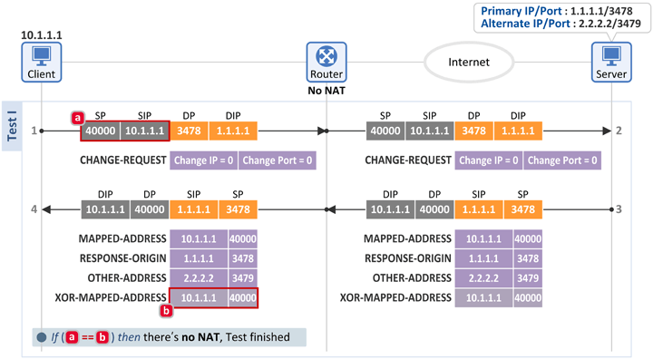
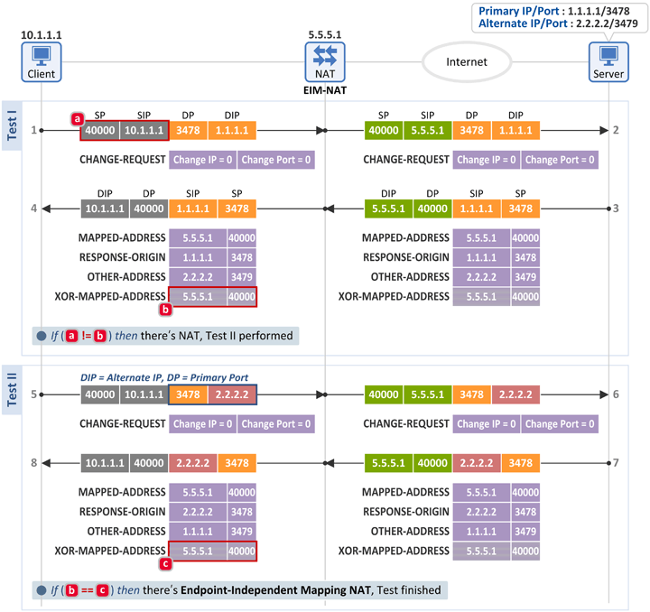
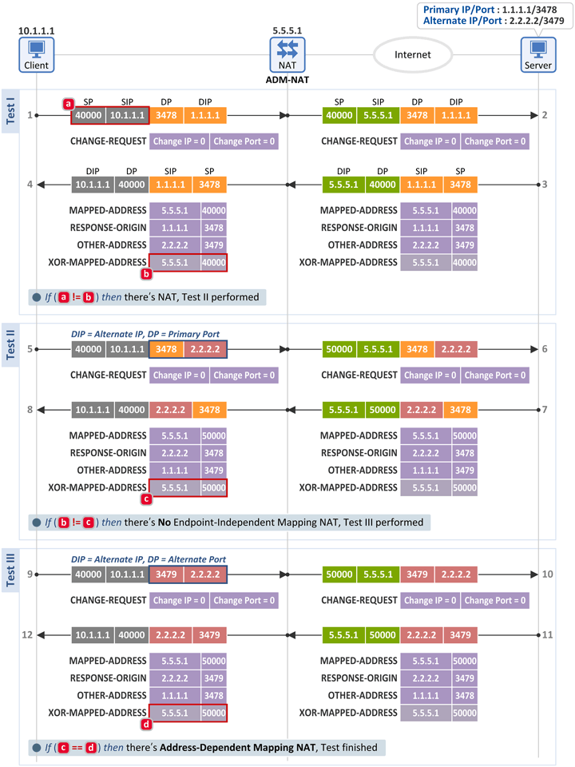
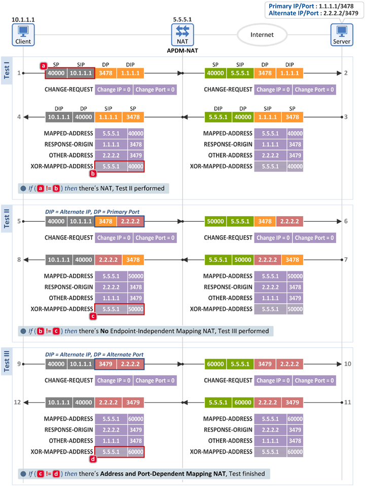
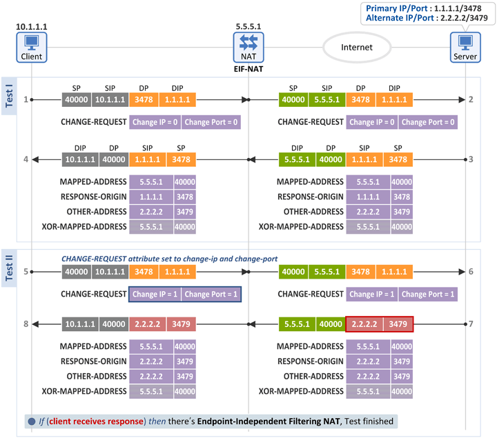
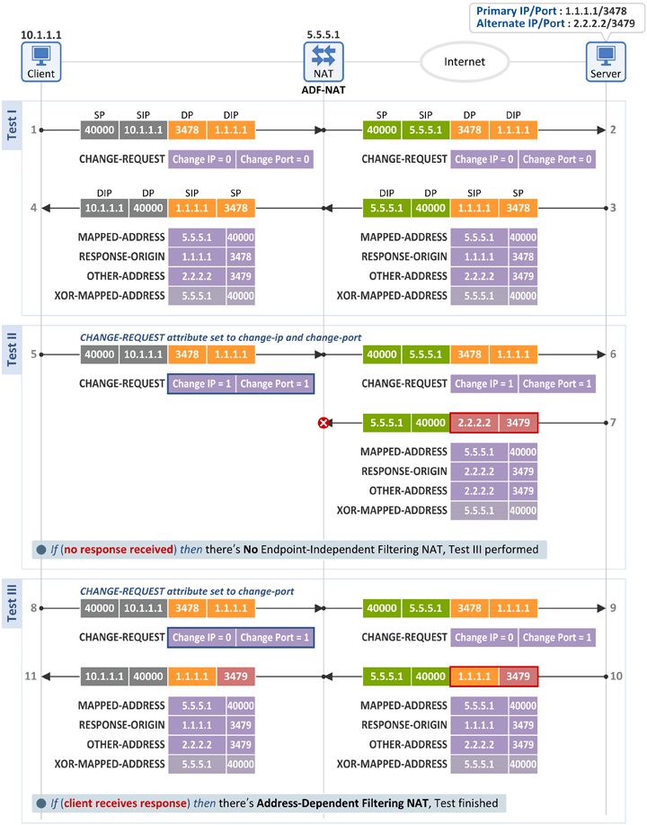
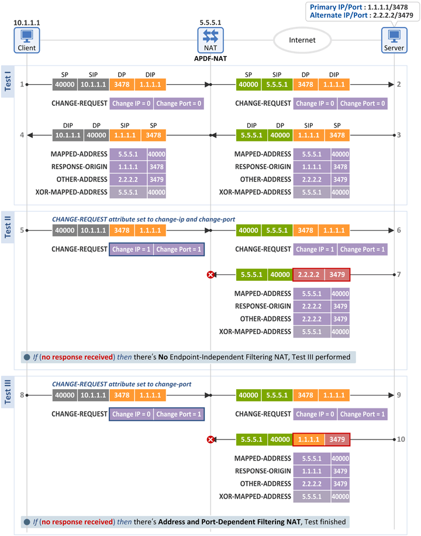

NAT Behavior Discovery Using STUN (RFC 5780)
November 18, 2013 | By Netmanias (tech@netmanias.com)
Our previous document described the NAT behavior discovery algorithms defined in RFC 3489. This document will explain what algorithms for discovering NAT behaviors are defined in RFC 5780.
Again, to fully understand what's discussed below, we recommend you read the following posts first:
1. NAT Behavioral Requirements, as Defined by the IETF (RFC 4787) - Part 1.
Mapping Behavior
2. NAT Behavioral Requirements, as Defined by the IETF (RFC 4787) - Part 2.
Filtering Behavior
3. STUN (RFC 3489) Vs. STUN (RFC 5389/5780)
1. STUN
Protocol
STUN is a simple protocol that allows a client (a STUN client) to send a server
(a STUN server) a Binding Request message, and the server to send a Binding Response back to the client.
And that's it!
In order for a server to discover NAT types (Mapping & Filtering Behavior), the server must have two
public IP addresses and two source ports (usually 3478 and 3479). One set of the information is called
Primary IP/Port (e.g. 1.1.1.1:3478), and the other is called Alternate IP/Port (e.g. 2.2.2.2:3479).
The two messages between the client and server include the following attributes:
[Client -> Server] Binding Request message's Attribute
CHANGE-REQUEST: It is used to
discover filtering behaviors of a NAT, and consists of "Change IP" and "Change Port" flags. If a client
sends a server a Binding Request message with these flags set as 0, the server uses the Destination
IP/Port of the message as the Source IP/Port (e.g. 1.1.1.1:3478) of the Binding Response it sends.
However, if these flags are set as 1, the server responds by using its alternate IP/Port (e.g.
2.2.2.2:3479).
[Client <- Server] Binding
Response message's Attribute
MAPPED-ADDRESS: The Source IP/Port
values of the Binding Request message that a server received are used in this attribute field. If there
is no NAT, this field will have the same values as the Source IP/Port of the client. But, if there is a
NAT, this field will have other values mapped by the NAT.
RESPONSE-ORIGIN: The Source
IP/Port values of the Binding Response message that the server sends are used in this attribute
field.
OTHER-ADDRESS: As mentioned above, a
server has two sets of IP/Port values. The other alternate IP/Port that the server has, not the
Destination IP/Port of the Binding Request message (i.e. the server's IP/Port), is used in this
attribute field.
XOR-MAPPED-ADDRESS: The same
values used in MAPPED-ADDRESS field are encoded by XOR operation, and then used in this field. The
client that receives this also performs XOR operation to find out the MAPPED-ADDRESS value. Some NATs
modify this value if there happens to be an IP address in a payload (in the MAPPED-ADDRESS attributes
field of Binding Request/Response messages) that is same as the one in the IP header, as a result of
faulty ALG implementation. Such modification may result in wrong MAPPED-ADDRESS values. In order to
prevent erroneous detection of NAT types resulting from such faulty ALG implementation,
XOR-MAPPED-ADDRESS is defined. Thus, although MAPPED-ADDRESS values are not actually used in RFC 5780,
they are included anyway for the purpose of maintaining backward compatibility with RFC 3489.
2. NAT Mapping Behavior
The algorithms for discovering a NAT's mapping behavior are defined in RFC 5780 as follows. Based on the
followings, we will describe how we test mapping behaviors of different NATs.
|
2.1 Test (Discovery) Procedure

- Test I checks the presence of a NAT.
- Test II discovers an Endpoint-Independent Mapping NAT.
- Test III detects an Address-Dependent Mapping NAT or Address and Port-Dependent Mapping NAT.
2.2 No NAT

Test I
- The client sends a Binding Request message to the server (at Primary IP:Primary Port (1.1.1.1:3478)), and receives a Binding Response message back from the server.
- The client then compares the following two fields. If they match, the client knows that there is no
NAT between the Internet and itself.
- [a] Binding Request message: IP header source information = 10.1.1.1.:40000
- [b] Binding Response message: XOR-MAPPED-ADDRESS attribute = 10.1.1.1:40000
- A server includes the source information of a Binding Request message ([a]) in XOR-MAPPED-ADDRESS ([b]) of a Binding Response message to send back to the client. Therefore, if the two values match, that indicates there is no NAT, and thus no IP address/port has been translated.
2.3 Endpoint-Independent Mapping NAT (EIM-NAT)

Test I
- The client sends a Binding Request message to the server (at Primary IP:Primary Port (1.1.1.1:3478)), and receives a Binding Response message back from the server.
- The client then compares the following two fields. If they don't match, the client knows that there
is a NAT between the Internet and itself. So, it performs Text II.
- [a] Binding Request message: IP header source information = 10.1.1.1:40000
- [b] Binding Response message: XOR-MAPPED-ADDRESS attribute = 5.5.5.1:40000
Test II
- Again, the client sends a Binding Request message. This time, however, the Alternate IP is used as the Destination IP. Thus, it sends a Binding Request message to the server (at Alternate IP:Primary Port(2.2.2.2:3478), and receives a Binding Response message back from the server.
- The client then compares the following two fields. If they match, the client knows that there is an
Endpoint-Independent Mapping NAT (EIM-NAT) between the Internet and itself.
- [b] Binding Response message: XOR-MAPPED-ADDRESS attribute = 5.5.5.1:40000
- [c] Binding Response message: XOR-MAPPED-ADDRESS attribute = 5.5.5.1:40000
- As two different packets with different Destination IPs (1.1.1.1 or 2.2.2.2) are mapped to the same External IP:Port (5.5.5.1:40000), the client knows that it's behind an EIM-NAT.
2.4 Address-Dependent Mapping NAT (ADM-NAT)

Test I
- Same as in the test for an EIM-NAT
Test II
- The client sends the same Binding Request message as in the test for an EIM-NAT, and a Binding Response message is received.
- The client then compares the following two fields. If they don't match, the client knows it's not an
EIM-NAT. So, It performs Test III.
- [b] Binding Response message: XOR-MAPPED-ADDRESS attribute = 5.5.5.1:40000
- [c] Binding Response message: XOR-MAPPED-ADDRESS attribute = 5.5.5.1:50000
Test III
- The client sends a Binding Request message to the server (at Alternate IP:Alternate Port (2.2.2.2:3479), and receives a Binding Response message back from the server.
- The client then compares the following two fields. If they match, the client knows that there is an
Address-Dependent Mapping NAT (ADM-NAT) between the Internet and itself.
- [c] Binding Response message: XOR-MAPPED-ADDRESS attribute = 5.5.5.1:50000
- [d] Binding Response message: XOR-MAPPED-ADDRESS attribute = 5.5.5.1:50000
- As two different packets with the same Destination IP (2.2.2.2), but different Destination Ports (3478 or 3479) are mapped to the same External IP:Port (5.5.5.1:50000), the client knows that it's behind an ADM-NAT.
2.5 Address and Port-Dependent
Mapping NAT (APDM-NAT)

Test I
- Same as in the test for an ADM-NAT
Test II
- Same as in the test for an ADM-NAT
Test III
- The client sends the same Binding Request message as in the test for an ADM-NAT, and receives a Binding Response back from the server.
- The client then compares the following two fields. If they don't match, the client knows that there
is an Address and Port-Dependent Mapping NAT (APDM-NAT) between the Internet and itself.
- [c] Binding Response message: XOR-MAPPED-ADDRESS attribute = 5.5.5.1:50000
- [d] Binding Response message: XOR-MAPPED-ADDRESS attribute = 5.5.5.1:60000
- As two different packets with the same Destination IP (2.2.2.2), but different Destination Ports (3478 or 3479) are mapped to two different External IPs:Ports (5.5.5.1:50000 and 5.5.5.1:60000), the client knows that it's behind an APDM-NAT.
3. NAT Filtering Behavior
The algorithms for discovering a NAT's filtering behavior are defined in RFC 5780 as follows:
|
3.1 Test (Discovery) Procedure

- Test II discovers an Endpoint-Independent Filtering NAT.
- Test III detects an Address-Dependent Filtering NAT or Address and Port-Dependent Filtering NAT.
3.2 Endpoint-Independent
Filtering NAT (EIF-NAT)

Test I
- The client sends a Binding Request message to the server (at Primary IP:Primary Port (1.1.1.1:3478)). At this time, both Change IP and Change Port flags in the CHANGE-REQUEST attribute field are set as 0. Of course, the client receives a Binding Response message back from the server.
Test II
- The client sends a Binding Request message to the server. At this time, both Change IP and Change Port flags in the CHANGE-REQUEST attribute field are set as 1.
- When the server receives the Binding Request message, it uses the Alternate IP:Port (2.2.2.2:3479), not the Primary IP:Primary Port (1.1.1.1:3478) of the received packet, as its source information, and sends a Binding Response message to the client.
- If this message is received, the client knows that it's behind a Endpoint-Independent Filtering NAT (EIF-NAT).
- As the inbound packet with the source information (2.2.2.2:3479), that is different from the destination information of the outbound packet (1.1.1.1:3478), was ALLOWED, the client is behind an EIF-NAT.
3.3 Address-Dependent
Filtering NAT (ADF-NAT)

Test I
- Same as in the test for an EIF-NAT
Test II
- The client sends the same Binding Request message as in the test for an EIF-NAT, but no Binding Response message is received.
- The client knows the NAT is not an EIM-NAT, and thus performs Test III.
Test III
- Again, the client sends a Binding Request message to the server. At this time, only the Change Port flag in the CHANGE-REQUEST attribute field is set as 1.
- When the server receives the Binding Request message, it uses the same IP as in the received packet, but a different port value (i.e. Primary IP:Alternate Port = 1.1.1.1:3479)), as its source information, and sends a Binding Response message to the client.
- If this message is received, the client knows that it's behind an Address-Dependent Filtering NAT (ADF-NAT).
- As the inbound packet with the same IP as in the outbound packet, but a different port (i.e. 1.1.1.1:3479) was ALLOWED, the client is behind an ADF-NAT.
3.4 Address and Port-Dependent
Filtering NAT (APDF-NAT)

Test I
- Same as in the test for an ADF-NAT
Test II
- Same as in the test for an ADF-NAT
Test III
- The client sends the same Binding Request message as in the test for an ADF-NAT, but no Binding Response message is received. The client knows it's behind an APDF-NAT.
- As the following two inbound packets are DENIED, the client knows that it's behind an
APDF-NAT.
- Inbound packet with Destination IP & Port values different from those in the outbound packet (i.e. 2.2.2.2:3479)
- Inbound packet with the same Destination IP as in the outbound packet, but a different Port value (i.e. 2.2.2.2:3479)
4. Summary
The procedures for discovering mapping and filtering behaviors of a NAT can be
summarized as follows:
A NAT's mapping behavior can be detected by switching the Primary IP (and Port, if needed later) value
into the Alternate IP (and Port) value in the Binding Request message.
that a client sends, and checking the XOR-MAPPED-ADDRESS value of the Binding Response message that the
client receives.
A NAT's filtering behavior can be detected by switching the values of CHANGE-REQUEST flags in the
Binding Request message that a client sends, and checking whether a response to the message is received
or not.
RFC 5780 NAT Behavior Discovery Tools Used in Our
Test
- Tool Name: STUNTMAN (STUN Server & Client)
- URL: http://www.stunprotocol.org/
- Test: STUNTMAN and ipTIME N2E used in discovering NAT mapping & filtering behaviors
- Test Result: Endpoint-Independent Mapping & Address and Port-Dependent Filtering detected